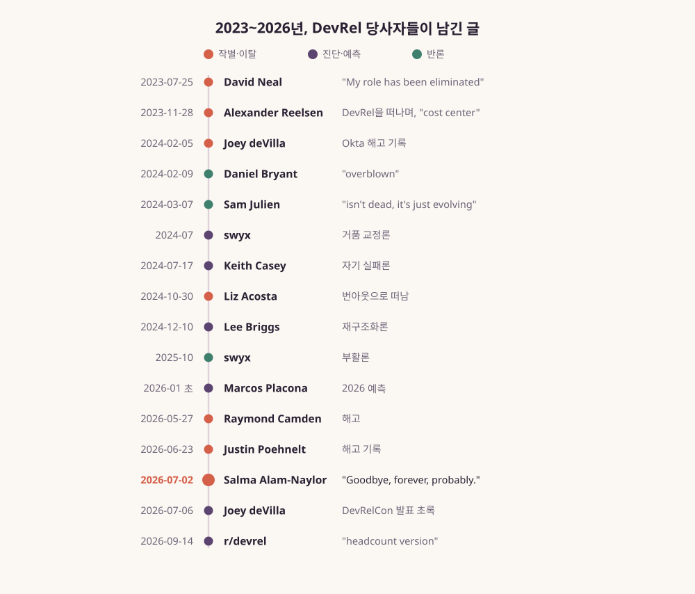
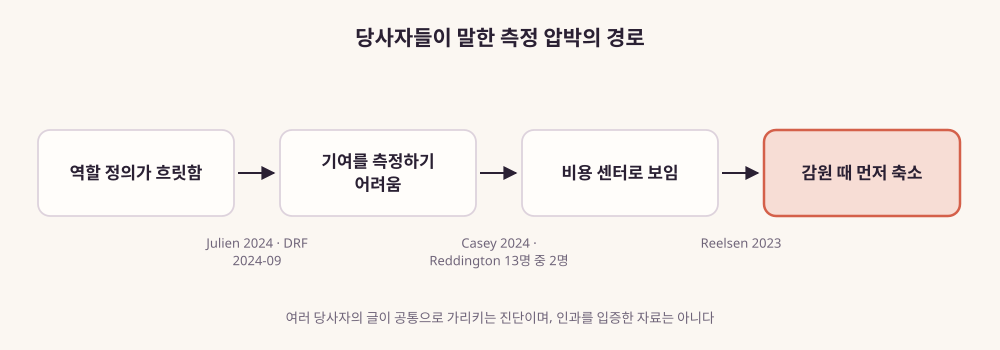
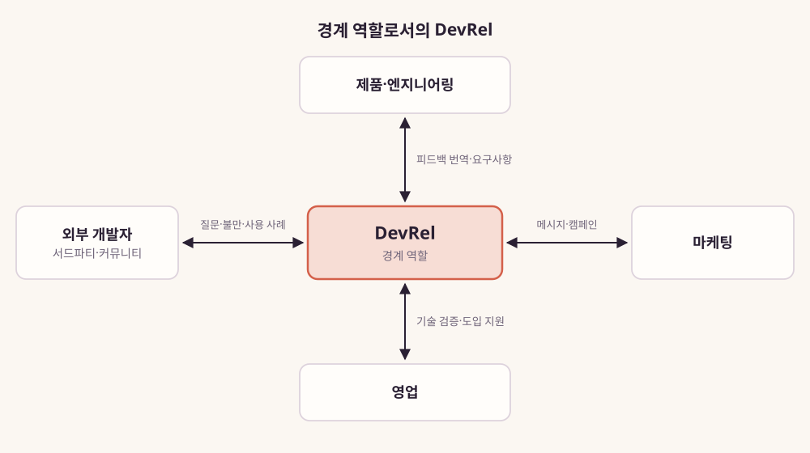
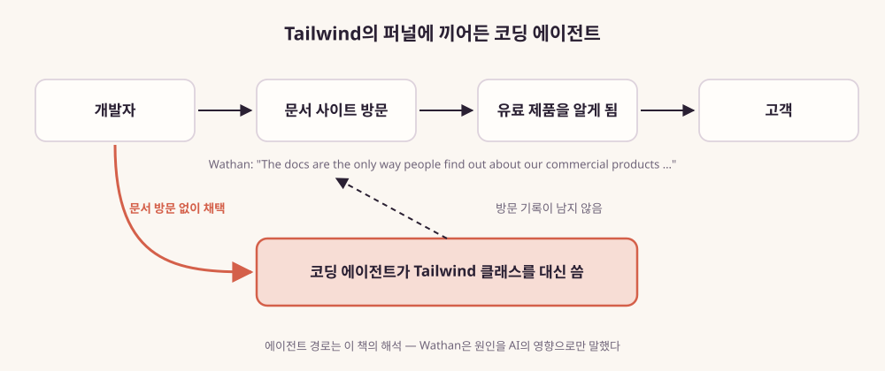
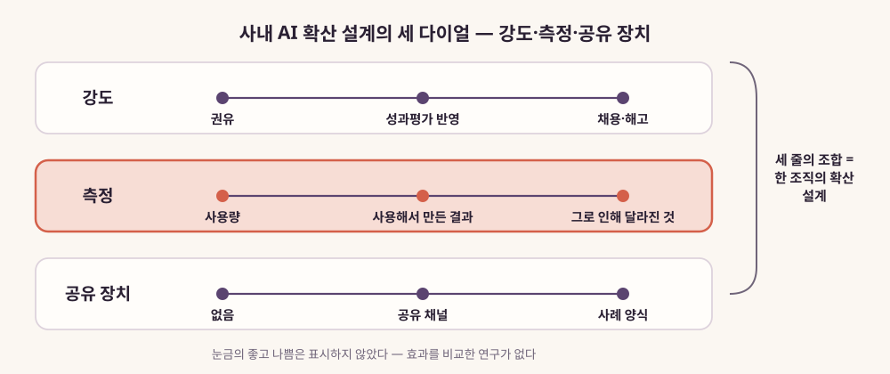
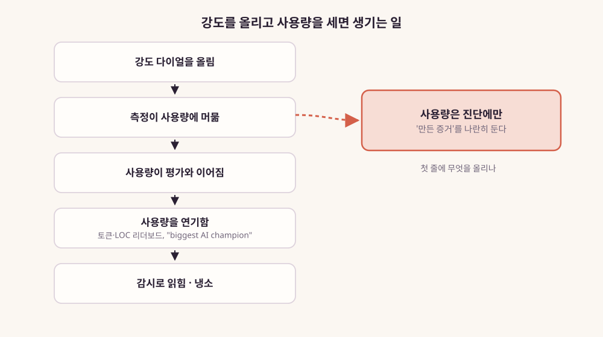

DevRel Next
코드 너머의 관계 — AI 시대, DevRel은 누구와 무엇을 잇는가
"DevRel을 했고, 지금은 AX를 한다."
— 하는 일을 동사로 적어보면, 두 일의 목록은 꽤 겹친다
이 책이 하려는 말은 한 문장이다
DevRel은 죽지 않았다.
'개발자 관계'에서 '만드는 사람과의 관계'로 넓어진다.
| 예전 | 지금 | |
|---|---|---|
| 누구와 | 전문 개발자 | 빌더(스스로 개발자라 부르지 않는 사람) · 에이전트 · 회사 안의 동료 |
| 무엇으로 | 튜토리얼 · 검색 · 포럼 | 에이전트가 읽는 정확한 문서 · 관계형 커뮤니티 · 만든 증거 |
| 잇는 일 | 번역 · 피드백 · 신뢰 · 먼저 가보기 |
오늘 발표는 이 표의 세 줄을 차례로 보여 드리는 순서로 갑니다.
DevRel을 했고, 지금은 AX를 한다
DevRel은 회사 바깥의 개발자와 관계를 맺는 일이다. 그들이 부딪힌 벽은 회사 안의 제품 팀에 전한다.
지금 내가 하는 AX는 조직 안에 AI를 퍼뜨리는 일이다.
두 일을 동사로 적어보면 목록이 꽤 겹친다.
— 서문
먼저 써보고, 가르치고, 보여주고, 막힌 곳을 모아 되돌려준다. 그 동사가 향하는 사람이 회사 안의 동료로 바뀌면, 그 일은 무엇이 될까?
오늘 이야기의 순서
- 1. 정말 죽었나? — 부고의 기록과, DevRel이 원래 하던 일
- 2. 누구와, 무엇으로가 바뀌었다 — 빌더와 에이전트, 달라진 통로
- 3. 직함은 흩어지고 기능은 남는다 — 채용 공고 속 네 가지 기능
- 4. 회사 안으로 — 퍼뜨리는 기술이 동료를 향할 때, 그리고 전망
정말 죽었나?
결론에 보태는 것 — 잘려 나간 것은 '잇는 일'이 아니라, 숫자로 설명되지 않던 자리와 옛 방식이었다.
- 1장. DevRel은 죽었는가
- 2장. 경계에 선 사람들
"Goodbye, forever, probably."
"AI is killing developer education."
AI가 개발자 교육을 죽이고 있다.
— Salma Alam-Naylor, 2026-07-02 블로그. DevRel을 떠났고, 프로필 직함은 Staff Engineer.
한 사람의 이직이 한 직업의 부고처럼 읽혔다. 비슷한 글이 2023년부터 이어졌다.
2023~2026년, 당사자들이 남긴 글
그림 1. 2023~2026년 DevRel 당사자들이 남긴 글
떠난다는 글만 있지 않았다. "죽지 않았다, 바뀌는 중이다"라는 반론도 같은 시기에 나왔다.

위기의 숫자는 무엇을 셌는지부터 본다
State of DevRel 2024, 310명 설문
Common Room 2023, 136명 벤더 설문
DevRel만의 숫자가 아니다
같은 '위기'를 말해도 사람·팀·회사 전체를 따로 셌다. 숫자를 옮길 때 무엇을 셌는지를 함께 적어야 한다.
성과를 숫자로 보여 주기 어려웠다

DevRel 실무자가 꼽은 가장 큰 어려움: 데이터로 영향을 증명하는 일(60.7%) — State of DevRel 2024, 310명 실무자 설문.
DevRel은 회사와 개발자 사이에서 양쪽 말을 옮기는 자리였다

1984년 매킨토시의 '에반젤리스트'로 시작해, 설득 위에 '피드백 전달'이 더해졌다.
DevRel 스스로는 이 일을 이렇게 설명한다
"represents the company to the community
and the community to the company"
회사를 커뮤니티에, 커뮤니티를 회사에 대변한다.
— Catalin Pit, 2023-10-31 블로그
"다리(bridge)"(Xe Iaso), "서로 다른 세계 사이를 번역한다"(Ashley Willis) — 직함과 회사는 달라도 같은 자리를 가리킨다.
그래서 이 책은 DevRel을 두 질문으로 읽는다
누구와 관계를 맺는가?
무엇으로 관계를 맺는가?
이 두 질문의 답이 동시에 바뀌었다는 것이 PART 2의 이야기다.
누구와, 무엇으로가 바뀌었다
결론에 보태는 것 — 청중은 빌더와 에이전트로 넓어졌고, 관계를 잇는 통로도 바뀌었다.
- 3장. 'D'가 넓어졌다
- 4장. 새 독자, 에이전트
- 5장. 'R'의 수단이 바뀌었다
개발자라 부르지 않는 사람도 만든다

비개발자가 만드는 일은 새 이야기가 아니다(2011년 연구도 "대부분의 프로그램은 전문 개발자가 쓰지 않는다"고 했다). 달라진 것은 규모와 결과물이다.
전문 개발자도 AI를 쓰지만, 믿지는 않는다
Stack Overflow 개발자 설문 2025, 약 49,000명, 자기선택 표본. DevRel의 청중은 '처음 만드는 사람'부터 'AI를 의심하는 전문가'까지 한 줄로 이어진다.
Supabase를 고른 것은 누구였나
"without ever talking to us"
우리와 한 번도 이야기하지 않고
— Thor Schaeff, DevRelCon New York 2025-07
AI 빌더 서비스들이 Supabase를 골랐다. LLM에게 "데이터를 어디에 저장하면 되지?"라고 물으면 Supabase라고 답했기 때문이라고 그는 전했다. 에이전트가 새 독자다.
에이전트를 위한 표준이 빠르게 생겼다

llms.txt, MCP, 'Agent Experience(에이전트도 사용자다)'라는 말까지 15개월 사이에 나왔다.
"측정된 웹 트래픽의 66%가 에이전트" — 이렇게 읽는다
국내 DevRel 매니저도 같은 변화를 적었다
"이제는 개발자뿐만 아니라 AI가 나와 회사의 글을
검색하고 읽는 시대가 되었고…"
— josephyang(스스로를 SK플래닛 DevRel Manager라고 소개), 데보션 2025-10-20 기술 블로그 개선 실험
사람의 조회수가 높지 않은 글도 AEO/AIO 전략에 맞춰 발행하면 AI가 잘 찾는 사례가 있다고 적었다(필자 한 사람의 관찰). 개발자와 함께 AI도 회사의 글을 읽는 독자가 됐다는 말이다.
문서가 입구였던 회사에 생긴 일

Tailwind는 문서 트래픽이 약 40% 줄었다(창업자 증언). 에이전트가 대신 코드를 써 주면 사람은 문서에 오지 않는다 — 이것은 이 책의 해석이다.
사람에게는 신뢰, 에이전트에게는 정확성

공개 Q&A는 줄었지만, 관계로 묶인 커뮤니티는 측정된 범위에서 버텼다.
그래서 무엇으로 이어야 하나
반대로 신뢰를 잃는 가장 빠른 길은 AI 응원단이 되는 것이다 — "모든 DevRel 자리에 AI 응원이 딸려 온다"는 자조가 나온다.
직함은 흩어지고 기능은 남는다
결론에 보태는 것 — 그날의 공고에서, 잇는 일은 DevRel 공고와 FDE 공고의 문장에 함께 적혀 있었다.
- 6장. 공고를 읽다
- 7장. 직업에서 역량으로
2026년 9월 25일, 같은 날 열어 본 채용 페이지
| 회사 | 'DevRel' 이름의 공고 | 현장 배치형(FDE)·솔루션 공고 |
|---|---|---|
| Anthropic | 1 | Applied AI 38 · FDE 계열 7 |
| OpenAI | 0 (DX Engineer 1) | Forward Deployed 22 |
| Supabase | 3 | — |
| ElevenLabs | 0 (DX Engineer 1) | FDE 계열 16 |
표 10 발췌 · 하루치 공개 목록이며 추세가 아니다. 'DevRel'이라는 이름보다 고객 곁으로 가는 직함이 훨씬 많다.
DevRel을 떠난 사람들이 간 곳

공고마다 되풀이되는 네 가지 일
직함은 DevRel, FDE, DX Engineer, 교육 담당, 사내 AX로 흩어져도 이 네 가지는 공고 문구에 계속 나온다.
네 가지 기능을 가진 사람이 가는 곳
DevRel 실무자의 61%가 "정해진 커리어 경로가 없다"고 답했다(State of DevRel 2024). 대신 기능으로 보면 갈 길이 여럿이다.
| 가는 곳 | 가장 많이 쓰는 기능 |
|---|---|
| FDE·솔루션 엔지니어 | 번역, 피드백 |
| 제품 엔지니어 | 먼저 가보기 |
| 교육 담당 | 신뢰, 번역 |
| 사내 AX | 네 가지 모두 — 청중이 회사 안 동료 |
리더는 세 가지를 차례로 정한다

회사 안으로, 그리고 다음
결론에 보태는 것 — 만드는 사람은 회사 안에도 있다. 다만 효과는 아직 증명 전이다.
- 8장. 퍼뜨리는 기술
- 9장. AX를 DevRel처럼 운영하기
- 10장. DevRel 다음
DevRel이 회사 전체의 AI 확산을 맡았다
"plot twist: we're not dead.
We're standing on the biggest stage of our careers."
반전: 우리는 죽지 않았다. 커리어에서 가장 큰 무대에 서 있다.
— Angie Jones(Block), 2025-10-20 블로그
Block의 DevRel 팀은 낯선 AI 에이전트 앞에서도 늘 하던 대로 했다. "먼저 가 보고, 알아내고, 다른 사람을 안내한다."
바깥에서 하던 일이 회사 안의 장치가 됐다

밋업은 사내 세션으로, 행사는 팀 방문으로, 커뮤니티 사례 모으기는 사내 사례 공유로.
무엇으로 잴 것인가 — 저자가 공개로 남긴 기록
"AI 시대에 "잘했다"를 토큰 사용량 같은 입력 지표로 재면 방향이 틀어집니다."
"진짜 신호는 검증된 결과입니다."
— 저자가 2026-06-30 데보션에 공개로 남긴, AX를 코드로 구현한 6개월의 기록
사용량이 아니라 결과를 센다 — PART 2에서 본 '만든 증거'와 같은 방향이다. 다만 한 사람의 기록이지 효과의 증거는 아니다.
아직 증명되지 않은 것
사내 AI 확산은 세 다이얼로 설계한다

커뮤니티형이 의무화보다 낫다는 비교 연구는 없다. 그래서 눈금에 좋고 나쁨을 표시하지 않았다.
사용량을 세면 사람들은 사용량을 연기한다

그래서 셀 것은 사용량이 아니라 만든 증거와 그 덕분에 달라진 것이다.
네 갈래 전망은 하나의 결론으로 모인다

흩어지고(해체), 넓어지고(확장), 거품이 빠지고(교정), 안으로 향한다(내향) — 넷은 결론의 세 축에 자리를 잡는다. 확장·내향은 '누구와', 교정은 '무엇으로', 해체는 '잇는 일'의 질문이다.
다시, 한 문장
DevRel은 죽지 않았다.
'개발자 관계'에서 '만드는 사람과의 관계'로 넓어진다.
누구와: 빌더·에이전트·회사 안 동료 · 무엇으로: 에이전트가 읽는 문서·관계형 커뮤니티·만든 증거 · 잇는 일: 번역·피드백·신뢰·먼저 가보기
책을 덮으며 해 볼 한 가지
DevRel Next
코드 너머의 관계
워크시트·체크리스트·설계 캔버스는 부록 A~C에 있습니다.